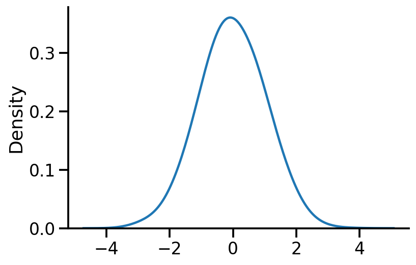
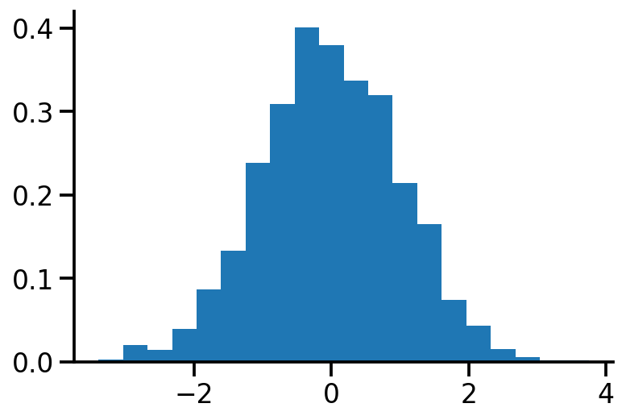
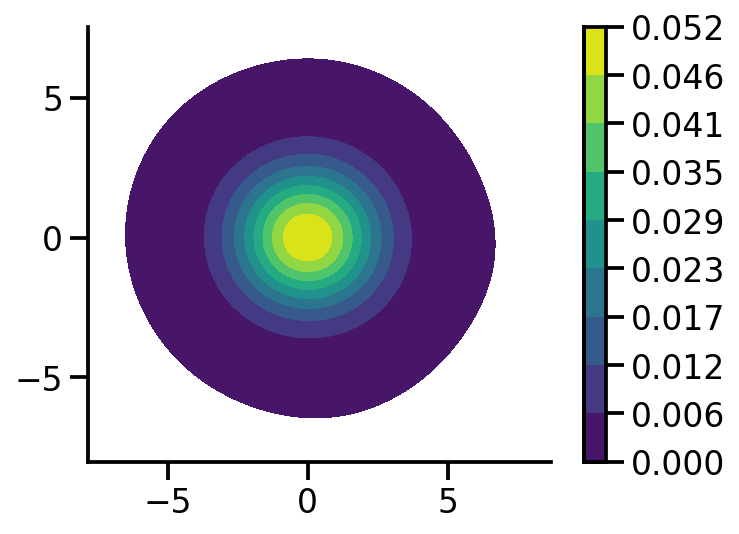
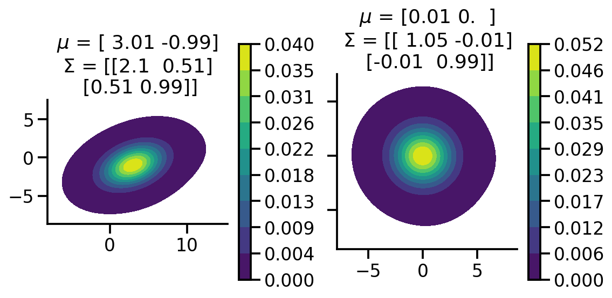

import numpy as np
import matplotlib.pyplot as plt
import tensorflow as tf
import seaborn as sns
import tensorflow_probability as tfp
import pandas as pd
tfd = tfp.distributions
tfl = tfp.layers
tfb = tfp.bijectors
sns.reset_defaults()
sns.set_context(context='talk',font_scale=1)
%matplotlib inline
%config InlineBackend.figure_format='retina'In this notebook I’ll talk about sampling from univariate and multivariate normal distributions. I’ll mostly directly write the code and show the output. The excellent linked references provide the background.
Sampling from a univariate normal
The goal here is to sample from \(\mathcal{N}(\mu, \sigma^2)\). The key idea is to use samples from a uniform distribution to first get samples for a standard normal \(\mathcal{N}(0, 1)\) and then apply an affine transformation to get samples for \(\mathcal{N}(\mu, \sigma^2)\).
Sampling from uniform distribution
U = tf.random.uniform((1000, 2))
U1, U2 = U[:, 0], U[:, 1]2022-02-04 12:00:15.559198: I tensorflow/core/platform/cpu_feature_guard.cc:151] This TensorFlow binary is optimized with oneAPI Deep Neural Network Library (oneDNN) to use the following CPU instructions in performance-critical operations: AVX2 FMA
To enable them in other operations, rebuild TensorFlow with the appropriate compiler flags.Applying the Box-Muller transform
X1 = tf.sqrt(-2*tf.math.log(U1))*tf.cos(2*np.pi*U2)
X2 = tf.sqrt(-2*tf.math.log(U1))*tf.sin(2*np.pi*U2)X = tf.concat((X1, X2), axis=0)
X.shapeTensorShape([2000])Plotting the obtained standard normal
sns.kdeplot(X, bw_adjust=2)
sns.despine()
plt.hist(X.numpy(), bins=20, density=True)
sns.despine()
Sampling from \(\mathcal{N}(\mu, \sigma^2)\)
We apply the affine transformation.
\(X \sim \mathcal{N}(0, 1)\)
\(Y \sim \mathcal{N}(\mu, \sigma^2)\) is equivalent to \(Y \sim \mu + \sigma X\)
mu = 2.
sigma = 2.
Y = mu + sigma*Xax = sns.kdeplot(X, label=r'$\mathcal{N}(0, 1)$', bw_adjust=2)
sns.kdeplot(Y, label=r'$\mathcal{N}(2, 4)$', bw_adjust=2)
sns.despine()
plt.legend()<matplotlib.legend.Legend at 0x1b2c0a340>
Sampling from multivariate normal
Like before, we first sample from standard multivariate normal and then apply an affine transformation to get for our desired multivariate normal.
The important thing to note in the generation of the standard multivariate normal samples is that the individial random variables are independent of each other given the identity covariance matrix. Thus, we can independently generate the samples for individual random variable.
U_2D_Samples = tf.random.uniform((2, 1000, 2))U11, U12, U21, U22 = U_2D_Samples[0, :, 0], U_2D_Samples[0, :, 1],U_2D_Samples[1, :, 0],U_2D_Samples[1, :, 1]def generate(U1, U2):
X1 = tf.sqrt(-2*tf.math.log(U1))*tf.cos(2*np.pi*U2)
X2 = tf.sqrt(-2*tf.math.log(U1))*tf.sin(2*np.pi*U2)
X = tf.concat((X1, X2), axis=0)
return XX_1 = tf.reshape(generate(U11, U12), (-1, 1))
X_2 = tf.reshape(generate(U21, U22), (-1, 1))X = tf.concat((X_1, X_2), axis=1)X<tf.Tensor: shape=(2000, 2), dtype=float32, numpy=
array([[-1.2652589 , -1.4106055 ],
[ 0.09925841, -0.12048604],
[ 0.73987466, 1.8815755 ],
...,
[-0.05203251, 1.1814289 ],
[-0.04060707, -0.14595209],
[-0.7659936 , 1.505757 ]], dtype=float32)>Plotting samples from generated standard 2d normal
sns.kdeplot(x=X[:, 0],
y = X[:, 1],zorder=0, n_levels=10, shade=True,
cbar=True, thresh=0.001, cmap='viridis',bw_adjust=5, cbar_kws={'format': '%.3f', })
plt.gca().set_aspect('equal')
sns.despine()
Applying the affine transformation
The main difference in the 1d and multivariate case is that instead of using \(\sigma\), we use the \(L\) cholesky matrix.
mean_2d = tf.constant([3., -1.])
cov = tf.constant([[2., 0.5],
[0.5, 1.]])L = tf.linalg.cholesky(cov)Y_2d = mean_2d + X@tf.transpose(L)Y_2d.shapeTensorShape([2000, 2])fig, ax = plt.subplots(ncols=2, sharey=True, figsize=(8, 4))
sns.kdeplot(x=Y_2d[:, 0],
y = Y_2d[:, 1],zorder=0, n_levels=10, shade=True,
cbar=True, thresh=0.001, cmap='viridis',bw_adjust=5, ax=ax[0], cbar_kws={'format': '%.3f', })
sns.kdeplot(x=X[:, 0],
y = X[:, 1],zorder=0, n_levels=10, shade=True,
cbar=True, thresh=0.001, cmap='viridis',bw_adjust=5, ax=ax[1], cbar_kws={'format': '%.3f', })
ax[0].set_aspect('equal')
ax[1].set_aspect('equal')
sample_mean_tr = tf.reduce_mean(Y_2d, axis=0).numpy()
sample_mean_tr_rounded = np.around(sample_mean_tr, 2)
cov_tr = tfp.stats.covariance(Y_2d).numpy()
cov_tr_rounded =np.around(cov_tr, 2)
sample_mean = tf.reduce_mean(X, axis=0).numpy()
sample_mean_rounded = np.around(sample_mean, 2)
cov = tfp.stats.covariance(X).numpy()
cov_rounded =np.around(cov, 2)
ax[0].set_title(fr"$\mu$ = {sample_mean_tr_rounded}"+"\n"+ fr"$\Sigma$ = {cov_tr_rounded}")
ax[1].set_title(fr"$\mu$ = {sample_mean_rounded}"+"\n"+ fr"$\Sigma$ = {cov_rounded}")
sns.despine()
fig.tight_layout()
References
- https://www.youtube.com/watch?v=DSWM7-9gK7s&list=PLISXH-iEM4Jm5B_J9p1oUNGDAUeCFZLkJ&index=38
- https://www.youtube.com/watch?v=4fVQrH65aWU
- https://en.wikipedia.org/wiki/Box–Muller_transform
- https://en.wikipedia.org/wiki/Affine_transformation